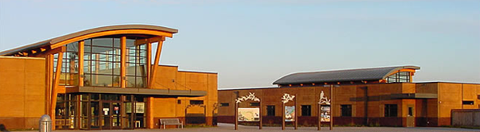
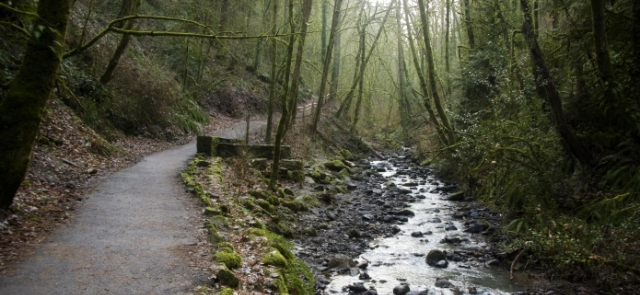
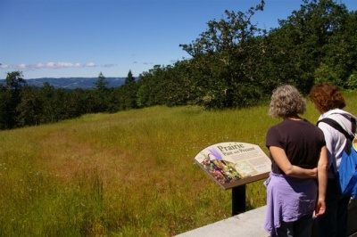

Most of my free time is spent outdoors, therefor; some of my favorite places are in nature! I like to go alone sometimes to clear my mind, or bring my dog and boyfriend with me for companionship.
The TRNWR is a flat walk, and only 3.25 miles roundtrip. Animals aren't allowed here so I typically go alone and catcht the sunset from the observatory after my walk.
There are many entrances to forest park, otherwise known as Washington Park. This really gives me a feeling of being outside of the suburbs. How lucky am I to have such a place so close to me?
Finally, Cooper Mountain. This is also not animal friendly, but offers a spectacular view at the entrance where the trails begin. But be ware, since it's all downhill , getting back up the trail will be tiring!
Here is a link to my favorite things.